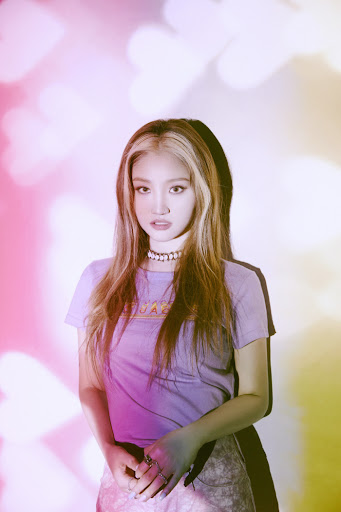

Sole은 대한민국의 싱어송라이터, R&B 가수이자 프로듀서. Amoeba Culture 소속 아티스트이다. 미국 본토 소울을 품은 듯 깊이 있으면서도 청량한 음색을 가져 한 번 들으면 잘 잊혀지지 않는 여운을 남긴다. 예명을 정할 때, 본명인 "소리"와 최대한 비슷한 걸 찾아보려고 했다고 한다. 가족은 본명을 줄여서 '쏠'이라고 부르고, 친구들은 '썰'이라고 불렀다고. 주변인들에게 많이 불리는 단어들과 비슷하면 좋겠다는 생각에 형용사로는 "유일한, 단 하나의"라는 뜻의 sole을 찾게 되었고, 소리와 의미가 마음에 들어 SOLE (쏠)로 표기하게 되었다고 한다. Devine Channel[3]의 유일한 여성 멤버이자, 첫 뮤즈로 2017년 11월 3일 첫 싱글 'RIDE'를 발매하며 데뷔하였다. 2020년 1월 15일 아메바컬쳐에 THAMA와 함께 합류하였다.
